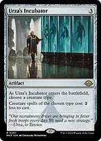
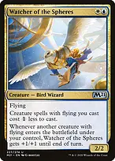
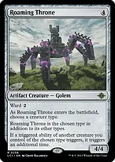
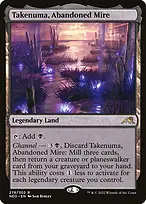
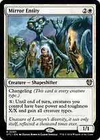
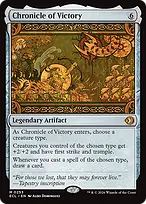
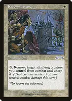
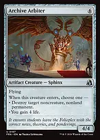

Eminence discounts OTHER Sphinx spells while The Ur-Sphinx is in the command zone or on the battlefield; it does not discount the commander itself. The mill-and-cast attack ability works only while the commander is on the battlefield. Develop discounted Sphinxes and card engines first, then deploy the commander when existing attackers can immediately turn it into free spells.
Develop without waiting for nine mana
For each resolving attack trigger, each player mills cards equal to the number of Sphinxes that attacked. You may cast up to one card milled this way from EACH player, including yourself, without paying its mana cost. In a four-player game that is up to four spells per trigger. More Sphinxes improve the choice of cards, rather than increasing the one-card-per-player allowance.
Cast those spells during the trigger's resolution; you cannot save the permission for later. Normal timing based on card type is ignored, but other restrictions and mandatory additional costs still apply. Lands cannot be cast, and an X in a free spell's mana cost is zero. New creatures from those spells do not join a combat whose attackers were already declared.

Sol Ring
Accelerates the generic costs of your large creatures and artifacts. Arcane Signet, Fellwar Stone, and the three Talismans provide early color fixing; protect access to blue and do not mistake colorless acceleration for the white-blue-black needed to cast Raffine.

Urza's Incubator
Choose Sphinx. It reduces Sphinx creature spells by two generic mana, including the commander. With Eminence, most other Sphinxes receive a combined three-mana generic discount.

Herald's HornAnother generic discount and a possible Sphinx card at each upkeep. The card goes to hand rather than being drawn. It is less explosive than Incubator but stays useful across a long game.

Sapphire Medallion
Reduces generic costs of blue spells, including your commander, most Sphinxes, and several protective spells. It cannot reduce a colored mana requirement.

Watcher of the Spheres

Reduces the generic cost of flying creature spells, including The Ur-Sphinx. It is not a Sphinx, so Eminence does not discount Watcher; Mirror Entity also normally lacks flying and gets no Watcher discount.
Make every Sphinx repay its cost

Roaming Throne
Choose Sphinx as it enters. It becomes a Sphinx on the battlefield and doubles triggered abilities of your OTHER Sphinx creatures: Unesh, Tivit, Consecrated Sphinx, and the commander's attack ability are premium choices. It is a Golem spell on the stack, so Eminence does not discount casting it.

Mystic RemoraEarly card access and a tax on opposing noncreature spells while you develop mana. Let it go when cumulative upkeep would prevent a necessary engine or protection play.

Esper SentinelEarly noncreature-spell draw pressure. Counters from Denzilore can increase its tax later, but it does not become a Sphinx unless Mirror Entity changes its types.
Turn selection into a lethal board
When Raffine, Prognostic, Kindred Discovery, and The Ur-Sphinx all trigger from an attack, choose the order deliberately. Drawing the top card before milling can remove the card you meant to cast for free; resolving a scry first can place a useful card into your next mill. Targets for triggered abilities are chosen when those abilities are put on the stack.
Reuse what you discard and mill

Reanimate
Returns a creature from any graveyard for one black mana, at a life cost equal to its mana value. It can recover your expensive Sphinx or steal an opponent's creature that was milled. Reanimating The Ur-Sphinx costs nine life and only works if the commander is actually in the graveyard.

Takenuma, Abandoned MireAn untapped black land early, or late recovery of a creature to hand after milling three. Returning Uldaros to hand preserves the chance to cast it for its payoff.
Normally leave the commander in the command zone until its cost is manageable. If it dies while you have reanimation ready, you may leave it in the graveyard instead of moving it to the command zone. That exposes it to graveyard interaction, so make the choice based on the table and your available recovery.
End the game with pressure and combat

Mirror EntityChangeling makes it a Sphinx in every zone, so Eminence reduces it to one generic and one white. Its activation changes your team's base power and toughness to X/X and gives all creature types. Use large mana reserves to turn small bodies into attackers; a small X can shrink your existing large Sphinxes.
Mirror Entity can make your non-Sphinx support creatures count toward the commander's attack trigger if activated BEFORE attackers are declared. It does not grant flying by itself. Later boosts from counters and Chronicle of Victory still apply on top of its new base power and toughness. Do not activate for zero casually.

Chronicle of Victory
Choose Sphinx for a +2/+2 team bonus, first strike, trample, and a draw trigger whenever you cast a Sphinx spell. This is a finishing investment that helps fliers punch through token blockers, not an early ramp play. Its cast trigger does not draw from reanimated creatures.
The commander's printed ten power with double strike is only twenty commander damage, not lethal from an untouched commander-damage total. One +1/+1 counter or Chronicle's anthem raises that above twenty-one. Ordinary life-total damage from several Sphinxes is usually the main route to victory.
Protect your advantage and remove blockers

ReconnaissanceLets you attack for triggers, then remove a threatened attacker from combat and untap it before combat damage. It can also untap surviving attackers during the end-of-combat step after damage. The already-triggered commander ability remains on the stack, but a creature removed before damage does not deal combat damage.

Lightning GreavesHaste can add an immediate commander attack or let a newly cast Sphinx contribute to the attack count. Shroud blocks your own targeted abilities too, including Raffine's connive target, Reconnaissance, and Clever Concealment. Move Greaves first when your own targeting matters.

Swords to PlowsharesEfficient exile for a must-answer creature. Anguished Unmaking covers nonland permanents more broadly at a three-life cost, which matters when you are already paying for cards and reanimation.

Archive ArbiterAn on-theme answer to a noncreature, nonland permanent, or life recovery when no such target matters. Cost reductions make its printed six mana manageable, and reanimation repeats its entry effect.

Soul-Guide LanternControls opponents' graveyards without exiling your own, which is important when the commander is feeding graveyards. Hold it against a recursion response or sacrifice for a card when graveyard hate is irrelevant. You cannot activate it in the middle of the commander's resolving trigger.
Opening hands and sequencing
Keep three lands with early blue and a route to the other colors, plus a rock or reducer and a useful early Sphinx or draw engine. A two-land hand needs reliable cheap card access and acceleration. Mulligan hands full of six- to eight-mana Sphinxes with no development, even with Eminence.
Your first goal is a working mana and card engine, usually a rock into a discounted Sphinx, Unesh, or another repeatable source of cards. You do not need to cast the commander early for the deck to function; its command-zone reduction is already doing work.
The 37 lands include nine fetchlands, original duals, shocklands, and typed surveil lands. Fetch for the next two spells rather than only the current spell. Most Sphinxes need blue; Dream Trawler also demands two white. Four basic lands provide a modest fallback, while the typed duals handle most fixing.

Cavern of SoulsChoose Sphinx to make actual Sphinx creature spells uncounterable, including Mirror Entity. It cannot provide colored mana for Spark Double or Roaming Throne merely because they will become Sphinxes later.

Three Tree CityChoose Sphinx. Its colored-mana ability needs two mana and its tap, so calculate the net gain from the number of Sphinxes you control. It is not an early three-color land. Otawara provides a channel answer when its land slot is no longer needed.
Reanimate and Animate Dead can use opponents' creatures too, but maintain enough life and interaction to survive the turn cycle. Hold a recovery spell when a wipe is likely instead of committing every threat.
On the finishing turn, resolve relevant pumps or protection before relying on them, order attack triggers deliberately, and remember that opponents may respond after the commander trigger has finished casting its free spells. Free does not mean uncounterable, and extra milling is also extra graveyard fuel for your opponents.